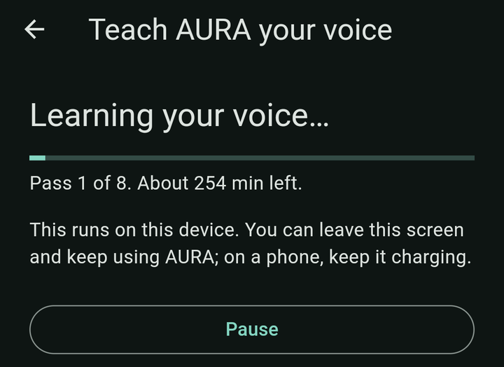
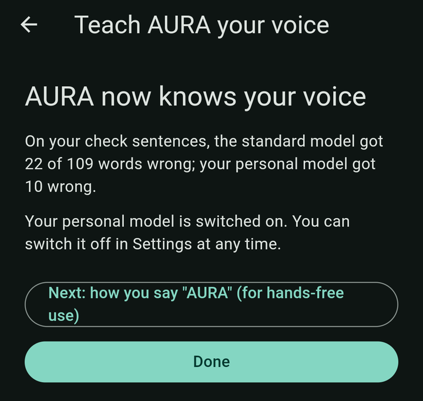
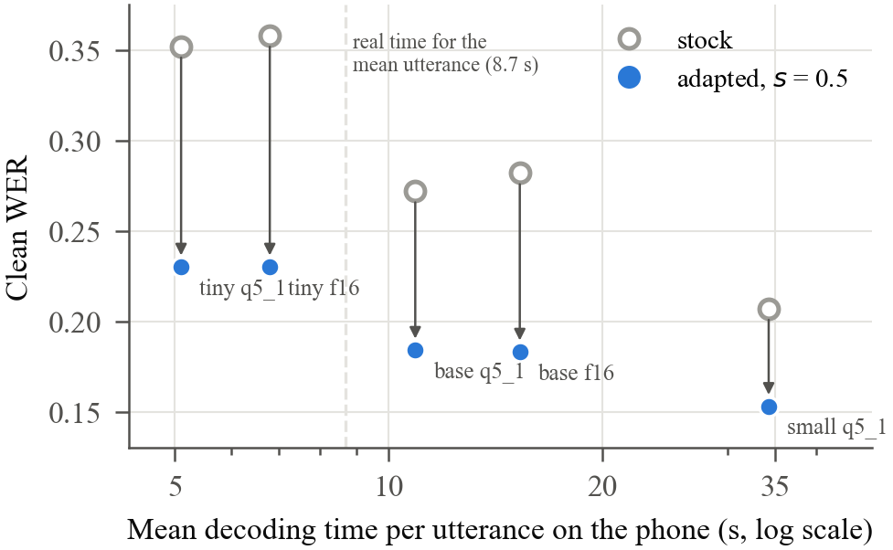

An assistant that works offline and learns how you speak
AURA sets reminders and alarms by voice, with no internet and no account. It learns your own voice and accent on your phone or PC, and it answers to its name. Built for East African English, free to use.
Version 0.1.1. Android 6 or later (64-bit phones); Windows 10 or later (64-bit). Install steps, checksums and known limits are in the release notes.
What it does
Talk or type
"Remind me to pay school fees on Friday at three p.m." AURA saves it, schedules the alert, and only says "Done" once the system has accepted it.
Fully offline
Speech recognition runs on the device with whisper.cpp. Memory, reminders and recordings stay on your phone or PC.
Learns your voice
Read 64 short sentences once, like setting up a fingerprint. Your device trains a small personal model, and it is switched on only if it beats the standard one on sentences it never trained on.
Say "AURA"
Optional hands-free wake word on Android and Windows. Off by default; audio is checked in memory and dropped unless the name is heard.
How it learns your voice
- Read. 52 practice sentences and 12 check sentences about commands, times and numbers, Ugandan names and places, and everyday speech (6 to 8 minutes).
- Learn. The phone trains a personal LoRA adapter on top of an East African accent model, in the background, while charging. On a 2017 phone this takes about 1.5 hours for the tiny model and about 4.5 hours for the base model.
- Check. AURA compares the personal and standard models on your 12 check sentences and keeps the personal one only if it makes fewer mistakes.
- Say "AURA" eight times so the wake word fits your voice.

Results
Measured on the East African subset of AfriSpeech-200 (728 test utterances, 83 unseen speakers, 8 accents) and on a Galaxy S8+. Full tables, intervals and limits are in the paper.
| What | Result |
|---|---|
| Accent adapter, small.en | Word error rate 0.279 → 0.153 (mean of three seeds), ahead of a full fine-tune of Whisper medium; general English almost unchanged (0.036 → 0.037) when the update is halved before merging. |
| On a 2017 phone | The adapted tiny model is more accurate than the stock base model (cleaned WER 0.230 against 0.272) at half the latency. |
| Personal adaptation | Five minutes of a speaker's own speech lowers base.en error by 3.4% on top of the accent model (95% CI below zero), the same with the app's own trainer and decoder; on the stock model it lowers error for all ten held-out speakers (0.329 → 0.202). |
| First enrolment on a real phone | On a 2017 Galaxy S8+, after one overnight training run with the base model, the personal model made 10 word errors on the 12 check sentences where the standard model made 22 (109 words). One user, so a first result and not a guarantee. |
| Wake word | 0.53 false accepts per hour on held-out accented speech (three-seed mean), 89% recall on unseen voices; the C++ detector matches the reference to 4×10⁻⁷ and uses about 1% of one phone core in a quiet room. |


Privacy
Nothing leaves your device and no audio is kept unless you turn that on. There is no telemetry and no account. Voice-setup recordings and your personal model stay on the device and can be deleted in Settings. Read the full privacy policy.
Research and models
AURA is described in On-Device Adaptation of Whisper to East African Accented English for an Offline Personal Assistant (J. Walusimbi, Department of Electronics and Computer Engineering, Soroti University, 2026).
| Item | Where | Licence |
|---|---|---|
| Applications for Android and Windows | Latest release | Free to use |
| Accent adapters, merged GGML models, personal-adaptation experiment | Hugging Face: whisper-afrispeech-east-africa | CC BY-NC-SA 4.0 |
| Wake-word detector "AURA" | Hugging Face: aura-wakeword | CC BY-NC-SA 4.0 |
The models are adaptations of AfriSpeech-200 and are free for non-commercial use only. The app is free. Source code is available from the author on request.
@misc{walusimbi2026aura,
title = {On-Device Adaptation of Whisper to East African
Accented English for an Offline Personal Assistant},
author = {Walusimbi, Joseph},
year = {2026},
url = {https://josephwalusimbi-eng.github.io/AURA-app/}
}